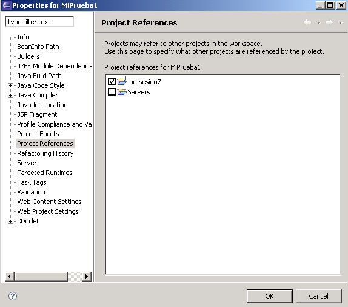

Desarrollo de aplicaciones web con Eclipse Webtools y Ant
Desarrollo y despliegue con WebTools
WebTools es un plugin ya integrado con Eclipse, que permite gestionar aplicaciones web como proyectos, teniéndolo todo integrado y a mano para poder empaquetar, probar y desplegar la aplicación de forma cómoda. Para ello, desde WebTools podremos, entre otras cosas:
- Gestionar el servidor web sobre el que queremos desplegar y/o probar la aplicación, pudiendo editar su configuración, y pararlo y reanudarlo cuando lo necesitemos, desde el propio Eclipse
- Crear y desarrollar las aplicaciones web que vayamos a desplegar. Para cada una, Eclipse nos organizará los ficheros según la estructura que digamos (carpeta de fuentes Java, carpeta WEB-INF, librerías, etc)
- Desplegar y testear las aplicaciones sobre el servidor tantas veces como queramos, manteniendo siempre el control sobre su ejecución desde Eclipse
Para trabajar con este tipo de elementos, trabajaremos desde la perspectiva Java EE de Eclipse. Veremos cómo realizar estas tareas a continuación.
Gestión de servidores web con WebTools
Para dar de alta en Eclipse el servidor web sobre el que queremos trabajar, vamos a Window - Show View - Servers, para abrir la vista de Servidores, y después, pinchando sobre ella con el botón derecho, vamos a New - Server. Podemos llegar igualmente desde el menú Window - Preferences, yendo a la opción Server - Installed Runtimes, y luego pulsando Add para añadir el nuevo servidor. Después, en la ventana que aparece, simplemente rellenamos los datos del nombre del host (por defecto, localhost), y el tipo de servidor web que usamos.
Es posible, si no detecta la instalación, que en un paso posterior nos pida que indiquemos el directorio de instalación de dicho servidor.
Después, en la vista Servers ya tendremos añadido el nuevo servidor. Haciendo click con el botón derecho sobre él, accedemos a las opciones para pararlo, reanudarlo, asociarle aplicaciones, etc
Creación y desarrollo de una aplicación web con WebTools
Para crear un proyecto de aplicación web desde WebTools, vamos al menú File - New - Project... - Web - Dynamic Web Project

En los siguientes pasos del asistente podemos elegir su configuración, y las carpetas donde alojar contenido web y fuentes Java. La estructura de carpetas que mantendremos en nuestros proyectos web será la siguiente:
- Carpeta src: carpeta de fuentes, con todas las clases Java y paquetes que hagamos para nuestra aplicación (clases auxiliares, servlets, etc)
- Carpeta resources: será una carpeta de fuentes, pero con todos los ficheros auxiliares (por ejemplo, ficheros .properties) que queramos tener disponibles en el CLASSPATH).
- Carpeta test: otra carpeta de fuentes, con las clases de prueba (JUnit) para las clases que tengamos en src. Los nombres de paquetes que tengamos aquí serán los mismos que los utilizados en src, y las clases de prueba se llamarán igual que las originales, pero acabadas en ...Test.
-
Carpeta WebContent: con la estructura de la aplicación web. En su carpeta raíz podremos colocar las páginas HTML / JSP (organizadas en subcarpetas si queremos)
- Subcarpeta WebContent/WEB-INF: con el fichero descriptor de la aplicación (web.xml)
- Subcarpeta WebContent/WEB-INF/lib: con las librerías JAR que necesite nuestra aplicación
- Subcarpeta WebContent/WEB-INF/classes: inicialmente vacía, en ella se copiarán después automáticamente los ficheros fuente de src
- Carpeta build: para dejar la aplicación web integrada y lista para desplegarse, con los ficheros fuente ya copiados en WEB-INF/classes, y todos los ficheros y directorios ya organizados.
- Carpeta dist: para guardar un fichero WAR con toda la aplicación de la carpeta build ya empaquetada y lista para distribuirse.
- Carpeta conf: para ficheros de configuración adicionales de la aplicación
- Carpeta db: con los scripts y elementos para la base de datos
- Carpeta doc: con ficheros de documentación
Algunas de estas carpetas las creará el propio asistente al terminar de crear el proyecto (como src, o WebContent y sus subcarpetas). Otras deberemos crearlas nosotros a mano. Una vez tengamos el proyecto creado, ya podemos irlo desarrollando.
Interdependencias entre proyectos
En ocasiones deberemos relacionar algún proyecto de clases Java que tengamos hecho, con un nuevo proyecto web que vayamos a hacer, para poder utilizar e incorporar las clases del proyecto Java en nuestro proyecto web. Para ello, vamos con el botón derecho del ratón sobre el proyecto, y vamos a sus Properties. En ellas, vamos a Project References, y marcamos con el ratón los proyectos que queramos asociar al actual:

Despliegue de aplicaciones web con WebTools
Una vez tengamos la aplicación web lista para probar en el servidor web, tenemos dos alternativas para desplegarla y probarla:
- Utilizar las facilidades de despliegue sobre el servidor que ofrece WebTools. Esta opción la utilizaremos en fase de desarrollo y depuración, para probar de forma cómoda y rápida los cambios que vayamos haciendo sobre nuestra aplicación.
- Utilizar un fichero build.xml de Ant con las tareas necesarias para compilar, empaquetar y desplegar. Este método se vio en la sesión 2 del módulo, y lo utilizaremos cuando tengamos la aplicación ya probada, y queramos hacer el empaquetamiento y despliegue definitivo.
Para poder desplegar la aplicación utilizando WebTools, simplemente tenemos que pinchar con el botón derecho sobre el proyecto web y elegir la opción Run As - Run on Server. Inicialmente, ya le hemos asignado el servidor al proyecto, cuando lo creamos, así que WebTools ya sabe sobre qué servidor desplegar los cambios.
Desarrollo de aplicaciones web con Ant
Aunque Webtools es una herramienta muy intuitiva, en proyectos complejos podemos necesitar un control total sobre el proceso de compilación y despliegue. En estos casos, podemos usar Ant.
Construcción de la aplicación
Cuando iniciamos el servidor web, automáticamente carga en el CLASSPATH del servidor lo necesario para trabajar con servlets y páginas JSP, y también carga las clases que haya en los directorios WEB-INF/classes y WEB-INF/lib de las aplicaciones, para que sepan dónde encontrarlas.
Sin embargo, para poder construir una aplicación (implementar y compilar los servlets y páginas JSP que la componen), necesitaremos también tener estos datos configurados, pues de lo contrario no conseguiremos compilar. Veremos ahora qué pasos hay que seguir para esto.
Directorio de trabajo
Primero debemos crear un directorio de trabajo donde colocar nuestras aplicaciones Web. Es recomendable que dicho directorio quede fuera del directorio de instalación del servidor.
Para que la aplicación esté disponible tendremos que instalarla dentro del servidor de aplicaciones, por lo que tendremos que copiar la aplicación de nuestro directorio de desarrollo al directorio del servidor web. Este proceso es lo que se conoce como despliegue, y lo estudiaremos con mayor detalle más adelante.
Podemos estructurar el directorio de desarrollo de la siguiente forma:
- src: Código fuente (servlets y otras clases)
- web (o WebContent): Elementos que no necesitan ser compilados (recursos estáticos, JSPs, WEB-INF/web.xml, librerías)
- build: Aplicación completa tal como se instalará en el servidor
- dist: Aplicación empaquetada (fichero WAR)
De esta forma separamos las clases Java de nuestra aplicación, que deben ser compiladas antes de desplegar la aplicación, del resto de elementos de la aplicación.
Establecer el CLASSPATH
Tenemos que añadir al CLASSPATH el lugar donde se encuentran las APIs de servlets y JSP. Cada servidor proporciona mediante unos ficheros JAR estas librerías, que deberemos añadir. En el caso de Tomcat, tenemos los ficheros servlet-api.jar para poder compilar nuestros servlets. Las páginas requieren otras librerías, como jsp-api.jar. Todos estos ficheros se encuentran localizados en el directorio common/lib. Normalmente sólo necesitamos añadir el fichero servlet-api.jar, puesto que las páginas JSP las compila automáticamente el servidor si no lo están, y él ya encuentra solo los JAR.
También deberemos añadir los directorios y ficheros JAR de otras clases que necesitemos y no formen parte de la API de Java (incluyendo librerías del directorio WEB-INF/classes o WEB-INF/lib de la aplicación).
La herramienta ant nos facilitará esta tarea, ya que podremos introducir en el classpath todas las librerías que incluye Tomcat de forma sencilla. Podemos incluir la librerías necesarias como se muestra a continuación:
<path id="compile.classpath">
<pathelement location="${catalina.home}/common/classes"/>
<fileset dir="${catalina.home}/common/endorsed">
<include name="*.jar"/>
</fileset>
<fileset dir="${catalina.home}/common/lib">
<include name="*.jar"/>
</fileset>
<pathelement location="${catalina.home}/shared/classes"/>
<fileset dir="${catalina.home}/shared/lib">
<include name="*.jar"/>
</fileset>
</path>
Donde ${catalina.home} será la ruta donde tengamos instalado Tomcat.
Construcción de la aplicación
Deberemos escribir todo el código fuente de las clases Java de nuestra aplicación en el subdirectorio src del directorio de desarrollo, y generar el resto de recursos en el subdirectorio web (siempre será necesario tener al menos el descriptor de despliegue /WEB-INF/web.xml para que la aplicación funcione).
Una vez hemos desarrollado los componentes de nuestra aplicación, deberemos construir la aplicación. Construiremos la aplicación final en el subdirectorio build, según la organización descrita anteriormente.
Una vez construida, podemos empaquetarla de forma opcional en un fichero WAR para facilitar su distribución. Este fichero WAR lo generaremos dentro del directorio dist.
Para construir la aplicación seguiremos los siguientes pasos:
1. Preparación
En esta fase deberemos construir en el directorio build la estructura básica de la aplicación web. Crearemos los directorios /WEB-INF, /WEB-INF/lib y /WEB-INF/classes y copiaremos todo el contenido que no necesita ser compilado (directorio web) a este directorio build.
Podemos utilizar ant para realizar esta tarea. Podemos hacerlo como se muestra a continuación:
<target name="prepare">
<mkdir dir="${build.home}"/>
<mkdir dir="${build.home}/WEB-INF"/>
<mkdir dir="${build.home}/WEB-INF/classes"/>
<mkdir dir="${build.home}/WEB-INF/lib"/>
<copy todir="${build.home}">
<fileset dir="${web.home}"/>
</copy>
</target>
2. Compilación
Hasta ahora tenemos en build todo el contenido de la aplicación web que no necesita ser compilado, y la estructura de directorios de /WEB-INF creada.
Ahora ya podemos compilar todas las clases Java que hayamos desarrollado en src. El código compilado resultante lo guardaremos en el directorio /WEB-INF/classes dentro de build, que es donde se deben ubicar estas clases Java. Para la compilación deberemos tener establecido el classpath con todas las librerías necesarias, tal como hemos visto en el punto anterior.
Utilizando ant podemos realizar esta compilación de la siguiente forma:
<target name="compile" depends="prepare"
description="Compila los fuentes Java">
<javac srcdir="${src.home}"
destdir="${build.home}/WEB-INF/classes"
debug="${compile.debug}"
deprecation="${compile.deprecation}"
optimize="${compile.optimize}">
<classpath refid="compile.classpath"/>
</javac>
</target>
3. Empaquetamiento
Por último, y de forma opcional, podemos empaquetar la aplicación en un fichero WAR para facilitar su distribución. En algún caso este paso puede ser obligatorio, ya que para desplegar las aplicaciones algunos servidores de aplicaciones nos fuerzan a utilizar un fichero WAR.
Deberemos utilizar la herramienta JAR para empaquetar todo el contenido del directorio build en un fichero con extensión WAR. Este fichero lo guardaremos en el directorio dist.
Podemos hacer esto con ant de la siguiente forma:
<target name="dist" depends="compile"
description="Crea el fichero WAR de la aplicacion">
<mkdir dir="${dist.home}"/>
<jar jarfile="${dist.home}/${war.name}" basedir="${build.home}"/>
</target>
Despliegue de la aplicación
Una vez hemos construido la aplicación deberemos desplegarla en el servidor de aplicaciones para que dicha aplicación esté disponible al acceder al servidor desde la web. Este proceso es conocido como despliegue o deployment. Cada servidor de aplicaciones tiene sus propios métodos para desplegar las aplicaciones. Por ejemplo, casi siempre tenemos disponible una interfaz web a través de la cual podemos subir y desplegar una aplicación en el servidor.
Vamos a ver las posibles formas en las que el servidor web Tomcat nos permite desplegar las aplicaciones, pero antes veremos dónde se almacenan las aplicaciones desplegadas en Tomcat.
Tomcat tiene un directorio webapps (${tomcat.home}/webapps) donde están todas las aplicaciones web instaladas en el servidor. Cada aplicación web está contenida dentro de un subdirectorio de webapps, y este subdirectorio contendrá toda la estructura de directorios y ficheros correspondiente a la aplicación web. Por ejemplo, podremos tener:
${tomcat.home}/webapps/aplic/
${tomcat.home}/webapps/aplic/index.htm
${tomcat.home}/webapps/aplic/WEB-INF/
${tomcat.home}/webapps/aplic/WEB-INF/web.xml
${tomcat.home}/webapps/aplic/WEB-INF/classes/
${tomcat.home}/webapps/aplic/WEB-INF/lib/
De esta forma tendremos un contexto (aplicación web) aplic instalado en Tomcat. Por defecto Tomcat asigna como ruta de cada contexto el mismo nombre del directorio del mismo, por lo que para acceder a esta aplicación aplic anterior deberemos introducir la siguiente URL:
http://localhost:8080/aplic/index.htm
Considerando que tenemos Tomcat instalado en nuestra máquina local y atendiendo en el puerto 8080 (es el puerto por defecto de Tomcat).
Más adelante veremos cómo podemos configurar Tomcat para asignar a cada contexto la ruta que queramos. Al instalar Tomcat encontramos una aplicación instalada por defecto en un directorio ROOT (${tomcat.home}/webapps/ROOT). Esta aplicación tiene asignada la ruta /, por lo que cuando accedamos a la URL:
http://localhost:8080/
Será esta la aplicación a la que se estará accediendo, que nos muestra la página de bienvenida de Tomcat y enlaces a documentación y a la aplicación de gestión del servidor.
Si copiamos recursos a este directorio ROOT, podremos acceder a ellos a partir de esta URL raíz del servidor. Por ejemplo, si copiamos la siguiente página HTML:
${tomcat.home}/webapps/ROOT/pagina.htm
Podremos acceder a ella utilizando la siguiente URL:
http://localhost:8080/pagina.htm
También podremos configurar Tomcat para que sea cualquier otra de las aplicaciones instaladas la que tenga asignada esta ruta raíz, simplemente cambiando la ruta asignada a cada contexto como se verá más adelante.
Vamos a ver las dos alternativas que tenemos para desplegar la aplicación usando Ant. La más sencilla sería simplemente copiar los archivos al directorio adecuado. La otra, más sofisticada, sería usar un conjunto de tareas especiales de Ant que incorpora Tomcat.
Copiar al directorio de aplicaciones
Esta forma de despliegue es la más sencilla. Simplemente copiamos el contenido de nuestra aplicación, que habremos generado en el directorio build de nuestro directorio de desarrollo, al directorio webapps de Tomcat. Esta copia la podemos hacer utilizando tareas de ant como se muestra a continuación:
<target name="deploy" depends="compile"
description="Despliega la aplicacion">
<mkdir dir="${catalina.home}/${app.name}"/>
<copy todir="${catalina.home}/${app.name}">
<fileset dir="${build.home}"/>
</copy>
</target>
También podremos copiar directamente el fichero WAR con la aplicación al directorio webapps de Tomcat. En este caso, cuando reiniciemos Tomcat, éste desempaquetará el fichero WAR creando la estructura de directorios de la aplicación bajo webapps. Esto es el comportamiento por defecto, pero podremos configurar Tomcat para que no desempaquete los WAR, sino que acceda a la aplicación usando directamente el fichero WAR como veremos más adelante.
Tareas de Ant para despliegue
Además de la interfaz HTML, el manager de Tomcat cuenta con una interfaz en forma de servicio, con la que podremos utilizar la funciones del manager enviando comandos en la misma URL.
Tomcat proporciona una serie de tareas adicionales de ant que utilizan estos servicios del manager para realizar las tareas de despliegue y gestión de la aplicaciones web. De esta forma podremos desplegar aplicaciones directamente utilizando tareas de ant. Esta librería de tareas de ant está contenida en el fichero catalina-ant.jar ubicado en:
${tomcat.home}/lib/catalina-ant.jar
Por lo tanto, para poder utilizar estas tareas de ant necesitaremos tener este fichero en el classpath. Si estamos utilizando la versión de ant incluida en Eclipse deberemos configurarlo para que incluya esta librería al ejecutar ant. Para ello nos vamos a Window > Preferences e introducimos este fichero en el classpath de ant:

Una vez tenemos esta librería de tareas en el classpath, deberemos declarar estas tareas dentro de nuestro fichero build.xml para poder utilizarlas. Las tareas disponibles son:
<taskdef name="deploy"
classname="org.apache.catalina.ant.DeployTask"/>
<taskdef name="install"
classname="org.apache.catalina.ant.InstallTask"/>
<taskdef name="list"
classname="org.apache.catalina.ant.ListTask"/>
<taskdef name="reload"
classname="org.apache.catalina.ant.ReloadTask"/>
<taskdef name="remove"
classname="org.apache.catalina.ant.RemoveTask"/>
<taskdef name="resources"
classname="org.apache.catalina.ant.ResourcesTask"/>
<taskdef name="roles"
classname="org.apache.catalina.ant.RolesTask"/>
<taskdef name="start"
classname="org.apache.catalina.ant.StartTask"/>
<taskdef name="stop"
classname="org.apache.catalina.ant.StopTask"/>
<taskdef name="undeploy"
classname="org.apache.catalina.ant.UndeployTask"/>
Vamos a ver ahora como utilizar las tareas principales de Tomcat.
Despliegue
Para desplegar una aplicación podemos utilizar la tarea deploy como se muestra a continuación:
<target name="deploy" depends="dist" description="Despliega la aplicacion">
<deploy url="${manager.url}"
username="${manager.nombre}"
password="${manager.passwd}"
path="${app.path}"
war="file:${dist.home}/${war.name}"/>
</target>
Donde ${manager.url} es la dirección en la que se encuentra el manager de Tomcat. Normalmente esta URL será la siguiente:
http://localhost:8080/manager
Si tenemos el servidor en nuestra máquina local en el puerto 8080. Para poder acceder a este manager debemos indicar también el nombre y el password de algún usuario con el rol manager, ya que no se debe permitir que cualquier usuario pueda desplegar y modificar las aplicaciones del servidor. Si no contamos con este usuario deberemos crearlo como vimos en el punto anterior.
Sobre la aplicación que vamos a desplegar, deberemos indicar la ruta que le vamos a asignar al contexto (path) y que la identificará dentro del servidor, y además deberemos proporcionar en war el fichero WAR que contiene la aplicación web que vamos a desplegar.
Eliminar la aplicación
Podemos eliminar de forma permanente una aplicación instalada con la tarea undeploy. Con esta tarea se borrarán del servidor todos los ficheros de la aplicación.
<target name="undeploy" description="Desinstala la aplicacion">
<undeploy url="${manager.url}"
username="${manager.nombre}"
password="${manager.passwd}"
path="${app.path}"/>
</target>
En este caso, al igual que con la tarea anterior, debemos proporcionar la URL del manager y el nombre y el password de un usuario administrador que pueda gestionar las aplicaciones del servidor.
Además tendremos que indicar la ruta de la aplicación que queremos eliminar. Esta ruta, como hemos visto anteriormente, será la que identifique cada aplicación, y por lo tanto deberemos proporcionarla siempre que queramos realizar alguna operación con cualquiera de las aplicaciones, para indicar a qué aplicación nos referimos.
Lista de aplicaciones
Podemos obtener una lista de todas las aplicaciones instaladas en el servidor utilizando la tarea list.
<target name="list" description="Lista las aplicaciones instaladas">
<list url="${manager.url}"
username="${manager.nombre}"
password="${manager.passwd}"/>
</target>
Esta tarea mostrará una lista de todas las aplicaciones y el estado de las mismas, además de la ruta donde están instaladas en el servidor.
Detener, reanudar y recargar
Si queremos que una aplicación deje de estar disponible al acceder al servidor desde la web, pero no queremos eliminarla, podemos detenerla utilizando la tarea stop:
<target name="stop" description="Detiene la aplicacion">
<stop url="${manager.url}"
username="${manager.nombre}"
password="${manager.passwd}"
path="${app.path}"/>
</target>
Posteriormente podremos volver a reanudar su ejecución para que la aplicación vuelva a estar disponible con start:
<target name="start" description="Reanuda la aplicacion">
<start url="${manager.url}"
username="${manager.nombre}"
password="${manager.passwd}"
path="${app.path}"/>
</target>
Cuando hayamos hecho cambios en la aplicación, es posible que nos interese que Tomcat recargue la aplicación para que se reflejen los cambios realizados. Podremos recargar una aplicación con la tarea reload:
<target name="reload" description="Recarga la aplicacion">
<reload url="${manager.url}"
username="${manager.nombre}"
password="${manager.passwd}"
path="${app.path}"/>
</target>
Instalación temporal
En lugar de desplegar una aplicación, podemos instalarla de forma temporal. La diferencia es que si realizamos una instalación temporal, la aplicación estará disponible en el servidor tras instalarla, como si hubiese sido desplegada, pero la próxima vez que se inicie el servidor esta aplicación ya no estará.
Para realizar esta instalación temporal podemos utilizar la tarea install:
<target name="install" depends="dist" description="Instala la aplicacion">
<install url="${manager.url}"
username="${manager.nombre}"
password="${manager.passwd}"
path="${app.path}"
war="file:${dist.home}/${war.name}"/>
</target>
Para eliminar las aplicaciones instaladas de forma temporal, utilizaremos la tarea remove:
<target name="remove" description="Desinstala la aplicacion">
<remove url="${manager.url}"
username="${manager.nombre}"
password="${manager.passwd}"
path="${app.path}" />
</target>
Un ejemplo completo
Vamos a ver a continuación un ejemplo de un fichero build.xml completo que podremos utilizar para desarrollar nuestras aplicaciones.
<project name="AplicWeb" default="compile" basedir=".">
<!-- Propiedades -->
<property name="catalina.home" value="/home/JavaEE/jakarta-tomcat-4.1.29"/>
<property name="manager.url" value="http://localhost:8080/manager"/>
<property name="manager.nombre" value="admin"/>
<property name="manager.passwd" value="JavaEE"/>
<property name="app.name" value="aplic"/>
<property name="app.path" value="/${app.name}"/>
<property name="app.home" value="${catalina.home}/webapps/${app.name}"/>
<property name="war.name" value="${app.name}.war"/>
<property name="build.home" value="${basedir}/build"/>
<property name="dist.home" value="${basedir}/dist"/>
<property name="docs.home" value="${basedir}/docs"/>
<property name="src.home" value="${basedir}/src"/>
<property name="web.home" value="${basedir}/web"/>
<property name="compile.debug" value="true"/>
<property name="compile.deprecation" value="false"/>
<property name="compile.optimize" value="true"/>
<!-- Declaracion de tareas de Tomcat -->
<taskdef name="deploy"
classname="org.apache.catalina.ant.DeployTask"/>
<taskdef name="install"
classname="org.apache.catalina.ant.InstallTask"/>
<taskdef name="list"
classname="org.apache.catalina.ant.ListTask"/>
<taskdef name="reload"
classname="org.apache.catalina.ant.ReloadTask"/>
<taskdef name="remove"
classname="org.apache.catalina.ant.RemoveTask"/>
<taskdef name="resources"
classname="org.apache.catalina.ant.ResourcesTask"/>
<taskdef name="roles"
classname="org.apache.catalina.ant.RolesTask"/>
<taskdef name="start"
classname="org.apache.catalina.ant.StartTask"/>
<taskdef name="stop"
classname="org.apache.catalina.ant.StopTask"/>
<taskdef name="undeploy"
classname="org.apache.catalina.ant.UndeployTask"/>
<!-- Classpath -->
<path id="compile.classpath">
<pathelement location="${catalina.home}/common/classes"/>
<fileset dir="${catalina.home}/common/endorsed">
<include name="*.jar"/>
</fileset>
<fileset dir="${catalina.home}/common/lib">
<include name="*.jar"/>
</fileset>
<pathelement location="${catalina.home}/shared/classes"/>
<fileset dir="${catalina.home}/shared/lib">
<include name="*.jar"/>
</fileset>
</path>
<!-- Objetivos -->
<target name="all" depends="clean,compile" description="Compila todo"/>
<target name="clean" description="Borra directorios build, dist y docs">
<delete dir="${build.home}"/>
<delete dir="${dist.home}"/>
<delete dir="${docs.home}"/>
</target>
<target name="compile" depends="prepare" description="Compila los .java">
<javac srcdir="${src.home}" destdir="${build.home}/WEB-INF/classes"
debug="${compile.debug}"
deprecation="${compile.deprecation}"
optimize="${compile.optimize}">
<classpath refid="compile.classpath"/>
</javac>
</target>
<target name="prepare">
<mkdir dir="${build.home}"/>
<mkdir dir="${build.home}/WEB-INF"/>
<mkdir dir="${build.home}/WEB-INF/classes"/>
<mkdir dir="${build.home}/WEB-INF/lib"/>
<copy todir="${build.home}">
<fileset dir="${web.home}"/>
</copy>
</target>
<target name="dist" depends="compile"
description="Crea el fichero WAR de la aplicacion">
<mkdir dir="${dist.home}"/>
<jar jarfile="${dist.home}/${war.name}" basedir="${build.home}"/>
</target>
<target name="javadoc" depends="compile"
description="Genera documentacion Javadoc">
<mkdir dir="${docs.home}"/>
<javadoc sourcepath="${src.home}" destdir="${docs.home}"
packagenames="*">
<classpath refid="compile.classpath"/>
</javadoc>
</target>
<target name="deploy" depends="dist" description="Despliega la aplicacion">
<deploy url="${manager.url}"
username="${manager.nombre}"
password="${manager.passwd}"
path="${app.path}"
war="file:${dist.home}/${war.name}"/>
</target>
<target name="undeploy" description="Desinstala la aplicacion">
<undeploy url="${manager.url}"
username="${manager.nombre}"
password="${manager.passwd}"
path="${app.path}"/>
</target>
<target name="list" description="Lista las aplicaciones instaladas">
<list url="${manager.url}"
username="${manager.nombre}"
password="${manager.passwd}"/>
</target>
</project>